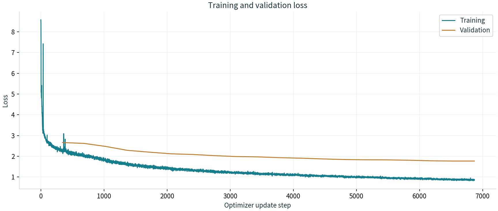
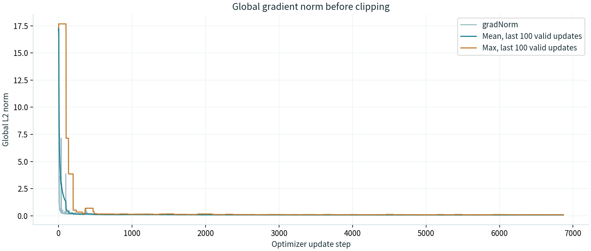
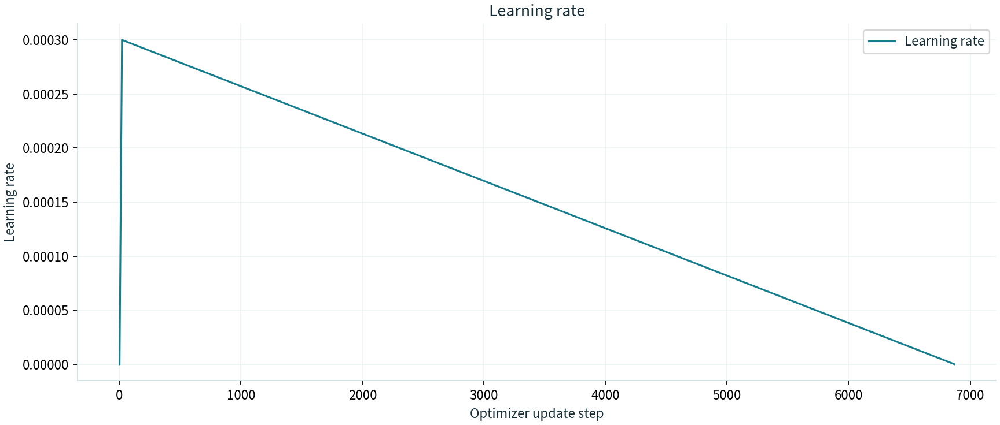
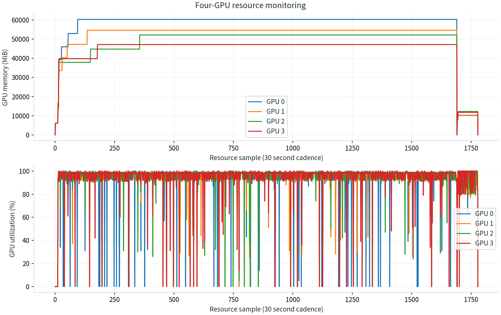

MINIONEREC · VIDEO GAMES · QWEN2.5-1.5B BASE
SFT 训练报告
已完成 更新于 2026-11-16T14:41:57.312583+08:00（北京时间）
gradNorm 全程均值0.119855
gradNorm 全程最大值17.6719
最大值所在 step3
最近 100 有效步均值0.0885677
最近 100 有效步最大值0.107496
有效 gradNorm 记录数6870
训练与监控口径
gradNorm 为去除 loss scale、裁剪前的全模型全局 L2 范数；不对四个 rank 的范数再次平均。窗口统计仅包含有限且未跳过的有效更新步，范数大于裁剪阈值 1 不等于训练失败。
| 项目 | 实际记录 |
|---|---|
| 训练状态 | completed |
| 最佳 checkpoint | /mnt/ossdata/ziweizhao/weights/checkpoints/MiniOneRec/Video_Games_sid2900/sft/checkpoint-6536 |
| 最佳验证 loss | 1.76839 |
| 停止原因 | max_epochs |
| 缺少 gradNorm 的更新步 | 0 |
| 非有限或无效 gradNorm | 0 |
| 跳过更新次数 | 0 |
| GPU 峰值显存 MiB | 60237 |
| GPU 平均利用率 | 93.5476 |
| 最近有效更新步的秒 / step | 7.32176 |
| 预计剩余训练小时 | 0 |
时间估计跳过 warmup，并使用最近最多 100 个有效更新步；不足两个 warmup 后样本时暂不估计。不包含后续验证与评估耗时，早停可能使训练提前结束。
实际运行配置及任务数量
| 键 | 值 |
|---|---|
| stage | sft |
| created_at_utc | 2026-11-15T13:37:16.557328+00:00 |
| model | {"source": "/mnt/ossdata/ziweizhao/weights/Qwen2.5-1.5B", "train_from_scratch": false, "original_vocab_size": 151665, "tokenizer_vocab_size": 152322, "added_sid_tokens": 657, "identity": {"format_version": 1, "source_directory": "/mnt/ossdata/ziweizhao/weights/Qwen2.5-1.5B", "train_from_scratch": false, "files": {"config.json": {"sha256": "0e8c8aa86468aba09c9d32157ff4bc2301c7e6c50e4398960425b2ea71e66f77", "size_bytes": 684}, "generation_config.json": {"sha256": "8c970692323e3ea0e9b8b0a4dca79388d31226e41f83c9fd6014804280ebf6e8", "size_bytes": 138}, "merges.txt": {"sha256": "599bab54075088774b1733fde865d5bd747cbcc7a547c5bc12610e874e26f5e3", "size_bytes": 1671839}, "model.safetensors": {"sha256": "a961db72e75d52b18e6b0c9d379e51a26973b233385e0e127fdda7d648aec796", "size_bytes": 3087467144}, "tokenizer.json": {"sha256": "c0382117ea329cdf097041132f6d735924b697924d6f6fc3945713e96ce87539", "size_bytes": 7031645}, "tokenizer_config.json": {"sha256": "c91efca15ceff6e9ee9424db58a6f59cd41294e550a86cbd07e3c1fb500b34f9", "size_bytes": 7228}, "vocab.json": {"sha256": "ca10d7e9fb3ed18575dd1e277a2579c16d108e32f27439684afa0e10b1440910", "size_bytes": 2776833}}, "sha256": "f4da6a998630e344cbf1877dd65907ba35a9b01c20bbf314bdc47d542a61168b"}} |
| data | {"train_file": "/mnt/ossdata/ziweizhao/MiniOneRec/data/Amazon18/posttraining/Video_Games_sid2900/train.csv", "eval_file": "/mnt/ossdata/ziweizhao/MiniOneRec/data/Amazon18/posttraining/Video_Games_sid2900/valid.csv", "sid_index_path": "/mnt/ossdata/ziweizhao/MiniOneRec/data/Amazon18/Video_Games/Video_Games.index.json", "item_meta_path": "/mnt/ossdata/ziweizhao/MiniOneRec/data/Amazon18/Video_Games/Video_Games.item.json", "category": "Video_Games", "sample": -1, "train_samples": 703463, "validation_samples": 41923, "sha256": {"train_file": "298ab91e2e8b98a7f816b1f27c23166b2c28916ad67b93e8347c2c710e1da6ab", "eval_file": "bbe4174774c0994deaa5bae6ab40c2f349c79e83f977ab03f8ffc9be92064d29", "sid_index_path": "ca9d730905a67cc36cd77c665a3165de823f2689660b19741df9ee884993085f", "item_meta_path": "e230098a423a8897bb1930e0b8bbd2e64a8730740492a2386c877a7f25318cf7"}} |
| task_counts | {"sid_sequence_recommendation": 335388, "history_to_title": 335388, "sid2title": 16572, "title2sid": 16115} |
| hyperparameters | {"world_size": 4, "micro_batch_size": 16, "gradient_accumulation_steps": 16, "global_batch_size": 1024, "max_epochs": 10, "learning_rate": 0.0003, "warmup_steps": 20, "lr_scheduler_type": "linear", "cutoff_len": 512, "max_grad_norm": 1.0, "bf16": true, "gradient_checkpointing": true, "attn_implementation": "sdpa", "deepspeed": "/opt/minionerec/config/h20_zero2.json", "seed": 42, "early_stopping_patience": 3, "eval_save_fraction": 0.05, "monitor_window": 100, "deepspeed_sha256": "e819baf9fad8b68f71afbb1bbaecc0d62f8eb18ea06ef1a548f80ac113f3b241"} |
| resume_from_checkpoint | — |
训练 / 验证 loss

gradNorm 与窗口统计

学习率

GPU 资源

监控事件
| 事件 |
|---|
| {"event": "checkpoint_saved", "step": 344, "checkpoint": "/mnt/ossdata/ziweizhao/weights/checkpoints/MiniOneRec/Video_Games_sid2900/sft/checkpoint-344", "best_checkpoint": "/mnt/ossdata/ziweizhao/weights/checkpoints/MiniOneRec/Video_Games_sid2900/sft/checkpoint-344", "best_metric": 2.661903142929077, "timestamp_utc": "2026-11-15T14:22:13.559119+00:00"} |
| {"event": "checkpoint_saved", "step": 688, "checkpoint": "/mnt/ossdata/ziweizhao/weights/checkpoints/MiniOneRec/Video_Games_sid2900/sft/checkpoint-688", "best_checkpoint": "/mnt/ossdata/ziweizhao/weights/checkpoints/MiniOneRec/Video_Games_sid2900/sft/checkpoint-688", "best_metric": 2.618082284927368, "timestamp_utc": "2026-11-15T15:05:49.203012+00:00"} |
| {"event": "checkpoint_saved", "step": 1032, "checkpoint": "/mnt/ossdata/ziweizhao/weights/checkpoints/MiniOneRec/Video_Games_sid2900/sft/checkpoint-1032", "best_checkpoint": "/mnt/ossdata/ziweizhao/weights/checkpoints/MiniOneRec/Video_Games_sid2900/sft/checkpoint-1032", "best_metric": 2.4704084396362305, "timestamp_utc": "2026-11-15T15:49:21.406602+00:00"} |
| {"event": "checkpoint_saved", "step": 1376, "checkpoint": "/mnt/ossdata/ziweizhao/weights/checkpoints/MiniOneRec/Video_Games_sid2900/sft/checkpoint-1376", "best_checkpoint": "/mnt/ossdata/ziweizhao/weights/checkpoints/MiniOneRec/Video_Games_sid2900/sft/checkpoint-1376", "best_metric": 2.2824432849884033, "timestamp_utc": "2026-11-15T16:32:53.070847+00:00"} |
| {"event": "checkpoint_saved", "step": 1720, "checkpoint": "/mnt/ossdata/ziweizhao/weights/checkpoints/MiniOneRec/Video_Games_sid2900/sft/checkpoint-1720", "best_checkpoint": "/mnt/ossdata/ziweizhao/weights/checkpoints/MiniOneRec/Video_Games_sid2900/sft/checkpoint-1720", "best_metric": 2.1970913410186768, "timestamp_utc": "2026-11-15T17:16:26.717866+00:00"} |
| {"event": "checkpoint_saved", "step": 2064, "checkpoint": "/mnt/ossdata/ziweizhao/weights/checkpoints/MiniOneRec/Video_Games_sid2900/sft/checkpoint-2064", "best_checkpoint": "/mnt/ossdata/ziweizhao/weights/checkpoints/MiniOneRec/Video_Games_sid2900/sft/checkpoint-2064", "best_metric": 2.117537498474121, "timestamp_utc": "2026-11-15T17:59:58.542239+00:00"} |
| {"event": "checkpoint_saved", "step": 2408, "checkpoint": "/mnt/ossdata/ziweizhao/weights/checkpoints/MiniOneRec/Video_Games_sid2900/sft/checkpoint-2408", "best_checkpoint": "/mnt/ossdata/ziweizhao/weights/checkpoints/MiniOneRec/Video_Games_sid2900/sft/checkpoint-2408", "best_metric": 2.0859150886535645, "timestamp_utc": "2026-11-15T18:43:32.815828+00:00"} |
| {"event": "checkpoint_saved", "step": 2752, "checkpoint": "/mnt/ossdata/ziweizhao/weights/checkpoints/MiniOneRec/Video_Games_sid2900/sft/checkpoint-2752", "best_checkpoint": "/mnt/ossdata/ziweizhao/weights/checkpoints/MiniOneRec/Video_Games_sid2900/sft/checkpoint-2752", "best_metric": 2.0285849571228027, "timestamp_utc": "2026-11-15T19:26:58.344730+00:00"} |
| {"event": "checkpoint_saved", "step": 3096, "checkpoint": "/mnt/ossdata/ziweizhao/weights/checkpoints/MiniOneRec/Video_Games_sid2900/sft/checkpoint-3096", "best_checkpoint": "/mnt/ossdata/ziweizhao/weights/checkpoints/MiniOneRec/Video_Games_sid2900/sft/checkpoint-3096", "best_metric": 1.9854230880737305, "timestamp_utc": "2026-11-15T20:11:10.462434+00:00"} |
| {"event": "checkpoint_saved", "step": 3440, "checkpoint": "/mnt/ossdata/ziweizhao/weights/checkpoints/MiniOneRec/Video_Games_sid2900/sft/checkpoint-3440", "best_checkpoint": "/mnt/ossdata/ziweizhao/weights/checkpoints/MiniOneRec/Video_Games_sid2900/sft/checkpoint-3440", "best_metric": 1.9691883325576782, "timestamp_utc": "2026-11-15T20:55:19.831306+00:00"} |
| {"event": "checkpoint_saved", "step": 3784, "checkpoint": "/mnt/ossdata/ziweizhao/weights/checkpoints/MiniOneRec/Video_Games_sid2900/sft/checkpoint-3784", "best_checkpoint": "/mnt/ossdata/ziweizhao/weights/checkpoints/MiniOneRec/Video_Games_sid2900/sft/checkpoint-3784", "best_metric": 1.9298949241638184, "timestamp_utc": "2026-11-15T21:38:59.066963+00:00"} |
| {"event": "checkpoint_saved", "step": 4128, "checkpoint": "/mnt/ossdata/ziweizhao/weights/checkpoints/MiniOneRec/Video_Games_sid2900/sft/checkpoint-4128", "best_checkpoint": "/mnt/ossdata/ziweizhao/weights/checkpoints/MiniOneRec/Video_Games_sid2900/sft/checkpoint-4128", "best_metric": 1.9061506986618042, "timestamp_utc": "2026-11-15T22:22:28.554031+00:00"} |
| {"event": "checkpoint_saved", "step": 4472, "checkpoint": "/mnt/ossdata/ziweizhao/weights/checkpoints/MiniOneRec/Video_Games_sid2900/sft/checkpoint-4472", "best_checkpoint": "/mnt/ossdata/ziweizhao/weights/checkpoints/MiniOneRec/Video_Games_sid2900/sft/checkpoint-4472", "best_metric": 1.8698042631149292, "timestamp_utc": "2026-11-15T23:05:59.193198+00:00"} |
| {"event": "checkpoint_saved", "step": 4816, "checkpoint": "/mnt/ossdata/ziweizhao/weights/checkpoints/MiniOneRec/Video_Games_sid2900/sft/checkpoint-4816", "best_checkpoint": "/mnt/ossdata/ziweizhao/weights/checkpoints/MiniOneRec/Video_Games_sid2900/sft/checkpoint-4816", "best_metric": 1.839874267578125, "timestamp_utc": "2026-11-15T23:49:33.081251+00:00"} |
| {"event": "checkpoint_saved", "step": 5160, "checkpoint": "/mnt/ossdata/ziweizhao/weights/checkpoints/MiniOneRec/Video_Games_sid2900/sft/checkpoint-5160", "best_checkpoint": "/mnt/ossdata/ziweizhao/weights/checkpoints/MiniOneRec/Video_Games_sid2900/sft/checkpoint-5160", "best_metric": 1.8281991481781006, "timestamp_utc": "2026-11-16T00:33:03.425588+00:00"} |
| {"event": "checkpoint_saved", "step": 5504, "checkpoint": "/mnt/ossdata/ziweizhao/weights/checkpoints/MiniOneRec/Video_Games_sid2900/sft/checkpoint-5504", "best_checkpoint": "/mnt/ossdata/ziweizhao/weights/checkpoints/MiniOneRec/Video_Games_sid2900/sft/checkpoint-5504", "best_metric": 1.8241322040557861, "timestamp_utc": "2026-11-16T01:16:37.027198+00:00"} |
| {"event": "checkpoint_saved", "step": 5848, "checkpoint": "/mnt/ossdata/ziweizhao/weights/checkpoints/MiniOneRec/Video_Games_sid2900/sft/checkpoint-5848", "best_checkpoint": "/mnt/ossdata/ziweizhao/weights/checkpoints/MiniOneRec/Video_Games_sid2900/sft/checkpoint-5848", "best_metric": 1.806064486503601, "timestamp_utc": "2026-11-16T02:00:05.925725+00:00"} |
| {"event": "checkpoint_saved", "step": 6192, "checkpoint": "/mnt/ossdata/ziweizhao/weights/checkpoints/MiniOneRec/Video_Games_sid2900/sft/checkpoint-6192", "best_checkpoint": "/mnt/ossdata/ziweizhao/weights/checkpoints/MiniOneRec/Video_Games_sid2900/sft/checkpoint-6192", "best_metric": 1.7795073986053467, "timestamp_utc": "2026-11-16T02:43:38.494842+00:00"} |
| {"event": "checkpoint_saved", "step": 6536, "checkpoint": "/mnt/ossdata/ziweizhao/weights/checkpoints/MiniOneRec/Video_Games_sid2900/sft/checkpoint-6536", "best_checkpoint": "/mnt/ossdata/ziweizhao/weights/checkpoints/MiniOneRec/Video_Games_sid2900/sft/checkpoint-6536", "best_metric": 1.768393635749817, "timestamp_utc": "2026-11-16T03:27:08.045014+00:00"} |
| {"event": "checkpoint_saved", "step": 6870, "checkpoint": "/mnt/ossdata/ziweizhao/weights/checkpoints/MiniOneRec/Video_Games_sid2900/sft/checkpoint-6870", "best_checkpoint": "/mnt/ossdata/ziweizhao/weights/checkpoints/MiniOneRec/Video_Games_sid2900/sft/checkpoint-6536", "best_metric": 1.768393635749817, "timestamp_utc": "2026-11-16T04:08:12.227150+00:00"} |
证据与可追溯性
| 源文件 | 字节 | SHA-256 |
|---|---|---|
| run_status.json | 10322 | d9a5c61ecfd3502081c5e92898b7e8d945d3743f383e6f734e22540cc73bc785 |
| run_config.json | 3447 | 2e2d728e1c05741476c6acf837654a6183f6d377e6e71d7ce1240dd9168e41e8 |
| baseline_validation.json | 422 | 51a6a24b0c20750aa0bd37e9d8b5e3e80a328a3785dd9c44dd93abe971c60097 |
| training_summary.json | 950 | 86ce25582826802c00a83d02a69b6666a3a2c379ffc1ef72354754847680ad91 |
| monitor/metrics.jsonl | 3988325 | d4088886146f699e0f1f303ca51fd33c0c7440b89845edb8b60b74ec4345d4b3 |
| monitor/summary.json | 8934 | 083f958b1414cc44f98f42ff670b019cd486071f97691c58ad138d2d2b568141 |
| monitor/events.jsonl | 7167 | faf34b072332007d4a964c7a9f23080dd00327fe2b62fbe9d10991b8a26b708c |
| gpu_metrics.jsonl | 1273954 | 186b432349033e67a38b5e51bbc3fe170c2ad4e0ef7aa1807174ce4af994e57f |
| evaluation/metrics.json | 24102 | dc0561306b10d9347e2ecb9749b60583c5278e3131feadce52a511d11544293e |
| comparison_baselines.json | 4552 | a7e0afbfed36b7f5256786aec5f0a38c0cbee6b787125e9d22bb12351da6c5e9 |
| behavior_shift_analysis.json | 19911 | 20452e40274f58aba9963ec43daf8dc92dd6342a9fc1a27a2e5f244132090e6c |
| /opt/minionerec/config/minionerec_paper_reference.json | 3026 | e5a7a83118712a17f0804bbdd2dccc1df01f4046bceacf0a509924df458f312f |
| /mnt/ossdata/ziweizhao/MiniOneRec/data/Amazon18/posttraining/Video_Games_sid2900/preparation_manifest.json | 2240 | bf1f7eb925850ae2b23051b85d1e01edc6628db5e730c9ef8d8c1ebd70909116 |